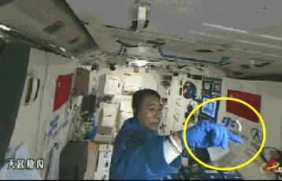

进行脑力负荷、情绪特征研究实验和测试
21日晚上，中央电视台《新闻联播》首次在太空播出，景海鹏、陈冬两名航天员在天宫二号实验舱内，
首次天地同步收看到了《新闻联播》节目。两名航天员还进行了在轨脑力负荷、在轨情绪特征研究等实验和测试。
收看纪念长征新闻兴趣浓晚上七点不到，天宫神舟组合体进入中继卫星天链03星的测控弧段，两名航天员按照计划安排，
调整好天宫二号舱内的显示屏，等候《新闻联播》节目的开始。新闻联播开始后，航天员景海鹏和陈冬站在显示屏前收看，
当看到习近平总书记在《纪念红军长征胜利80周年大会》上的重要讲话时，两名航天员不时鼓掌。当节目播放到默哀环节时，
两名航天员在万里之外的太空颔首肃立，一起为在长征途中和在各地革命斗争中英勇牺牲的革命烈士默哀。据了解，在轨飞行任务期间，
按照计划，地面科研人员将持续每天实时上传新闻联播，此外还将推送航天员自己喜爱的其他节目。
航天员科研训练中心航天医学工程总体室主任吴大蔚说，新闻联播只是这次天地心理支持中的一个部分。航天员中心还策划了很多内容，
包括航天员个人感兴趣的一些人文关怀内容，内容暂时保密，后续他们也会慢慢地、一天一天按照策划给他们传上去，“要给他们惊喜”。
除了音视频节目，在天宫二号上航天员还可以与地面人员进行视频通话，往来电子邮件，丰富他们的太空生活。
这一天，两名航天员早早起床，按计划照料了蚕宝宝。随后他们打开舱内新安装的折叠工作台，取出电脑开始了一天的工作。
景海鹏头上戴着一个黑色的头套出现在画面中，这是航天员正在进行在轨脑力负荷测试，目的是研究航天员在太空中的用脑情况。
脑机交互是目前国际上的尖端技术，在不使用语言和动作的前提下，仅依靠大脑的思维就能实现指挥控制。如今科研人员把这项技术首次搬上太空，
就是为了验证这项技术的空间适应性，整个脑机交互实验持续了三十分钟，按计划，航天员还将多次在轨进行这项实验。
生菜只种不吃 验证养分水分传导按计划，两名航天员继续进行太空植物栽培实验。在太空中组装植物种植箱可并非一件容易的事，
两名航天员忙碌了3个多小时。安装完毕后，航天员陈冬用手持摄像机下传了整个实验过程。杨利伟介绍说，航天员要围绕工作台工作，
这样他们就能把自己的脚都放在脚限制器里，固定自己，使他们整个人的工作状态就像在地面工作一样。塑料膜覆盖的是九颗生菜种子。
之所以带生菜来太空，是因为生菜的生长周期刚好是30天，跟航天员天宫驻留时间吻合，而且它的环境适应性很强、又非常受人们喜爱，
因此生菜这回就有幸入选，成为我国首次在太空接受栽培实验的植物。这次种植的植物不会食用，而是作为实验样本采集相关的数据。
据航天员科研训练中心环控生保研究室王隆基介绍，此次实验主要是验证在微重力环境下，水分养分的传导控制技术，还有检测技术，
第二是验证在轨播种时植物的间苗和自主的照料技术，第三是获取植物光合作用产生的氧气量，最后是收获植物的植物量，
还有植物的营养品质以及可食用性等这方面的数据。此次实验的意义是，中期的驻留有30天，通过植物这个实验，
可能会对航天员带来身心方面的愉悦，提高航天员在轨工作的效率和生活的心情。进行实验的同时，航天员还换上的企鹅服，
腰部有深蓝颜色环带。这也是在天宫二号舱内航天员穿的最多的服装，航天员需要克服衣服里面的弹力机构的阻力，来达到锻炼肌肉的目的。
午饭前，航天员陈冬利用一根弹力绳进行了拉力锻炼。从手臂到胸背部，为了防止失重环境下肌肉萎缩，每天这样的拉力锻炼是必不可少的。
有两次太空飞行经历的景海鹏则漂浮在舱内，尽情享受失重状态下奇妙的锻炼。
10月22日晚间消息，今日下午，腾讯董事会主席兼CEO马化腾参加清华大学经管学院2016清华管理全球论坛，
发表了演讲并与清华经管学院院长钱颖一进行对话，就自己的成长经历、腾讯发展历程中经历过的困难以及微信诞生背后的故事，进行了分享。
马化腾谈个人经历：排班级10名左右在谈到自己的个人时，马化腾表示自己的兴趣爱好是天体物理，喜欢研究宇宙的知识，并称“看科幻小说，
会让自己有前瞻性。”在学习计算机的时候，马化腾爆料称成绩在班里排在10名左右，而且自己更加在乎课外的项目，
认为课外项目比课上学习的东西多。初入社会的马化腾对软件非常有兴趣，在深圳主要工作就是“装机”，当时与自己同行的人都是小学初中学历，
马化腾认为这样下去自己会被社会淘汰，因此决定去到大企业里进行锻炼。马化腾称，因为自己会写C语言,在当时，懂计算机和通信的人很少，
所以自己很幸运地在毕业前三个月就找到了实习单位。马上就要迎来自己45岁生日的小马哥认为，
无论是自己的45岁生日还是腾讯当前取得的成绩, 同时，感慨自己很幸运能够在中国高速发展的环境里做些事情。
马化腾爆料：遇到挫折之后诞生了微信 在谈到自己曾经遇到的困难和挫折时，马化腾爆料一共有三次。第一次是早期创业时，
开发了一款产品想养肥了之后卖掉，但是因为投标输了，投资人担心盈利模式，没有融到钱，也没钱买服务器。第二次是与MSN的竞争。
第三次是微博的出现，马化腾称，微博是出现对于腾讯来说有了一个强大的竞争对手，当时有3个团队报名，做一个能够解决PC到移动端的产品，
最后一个团队作出了微信，马化腾坦言：“外界说微信对于我们来说是拿到了一张移动互联网的船票，拿到票上船，其余的就没机会了。”
“从PC到移动一个这么大的方向，变化太快了，以致于我们互联网公司没反应过来，反应过来就活下来了，没反应过来就死掉了。”马化腾如是说。
说到微信的名字，马化腾表示“we chat 的名字是我自己想出来的，刚开始想到什么信，还想到q信，后来就叫微信，we 和微同音，就这样吧。”
创新创业的看法：人口红利已结束 抓住消费升级在谈到创新时，互联网的更新迭代更快过美国。”